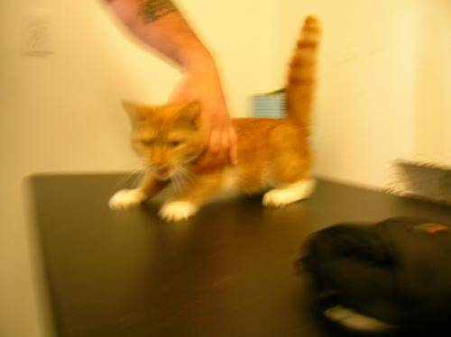
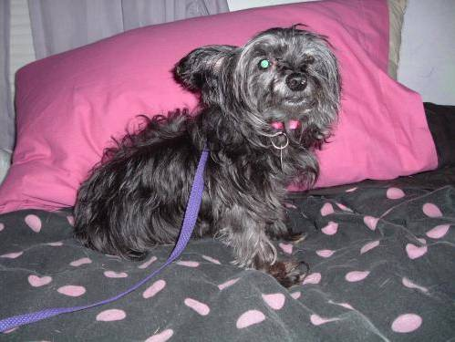
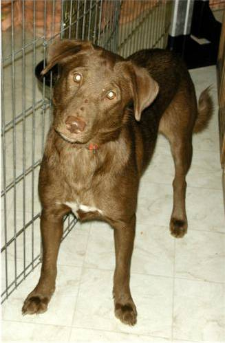
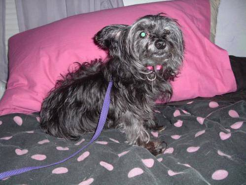
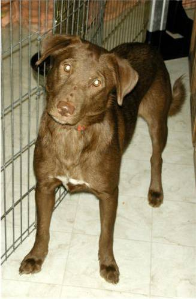

transfer learning
cats vs dogs problem , dnn's rule for this kind of task, nowadays.

 



we could try to use transfer learning ,
that is: use an existing, pretrained model, and try to teach it some new tricks !
we can just "pipe" our images through the network, stop it at some layer (before it would do the final classification),
grab the output neurons from there, and feed our own ml classifier with this data (instead of using the "raw" images) , like this:
(colour) image --> DNN --> 1000 numbers --> our own classifier (ANN_MLP for today)
since opencv's dnn module already supports various classification models, let's try with squeezenet(which is also small, and quite fast !)
it was trained on millions of images (imagenet), among them cats & dogs. so, it has "seen the world", already. ;)
there are 67 layers (!), here's how the last 10 look like: (i=input,o=output)
fire9/squeeze1x1 Convolution i[1, 512, 14, 14] o[1, 64, 14, 14]
fire9/relu_squeeze1x1 ReLU i[1, 64, 14, 14] o[1, 64, 14, 14]
fire9/expand1x1 Convolution i[1, 64, 14, 14] o[1, 256, 14, 14]
fire9/relu_expand1x1 ReLU i[1, 256, 14, 14] o[1, 256, 14, 14]
fire9/expand3x3 Convolution i[1, 64, 14, 14] o[1, 256, 14, 14]
fire9/relu_expand3x3 ReLU i[1, 256, 14, 14] o[1, 256, 14, 14]
fire9/concat Concat i[1, 256, 14, 14] i[1, 256, 14, 14] o[1, 512, 14, 14]
drop9 Dropout i[1, 512, 14, 14] o[1, 512, 14, 14]
conv10 Convolution i[1, 512, 14, 14] o[1, 1000, 14, 14]
relu_conv10 ReLU i[1, 1000, 14, 14] o[1, 1000, 14, 14]
pool10 Pooling i[1, 1000, 14, 14] o[1, 1000, 1, 1]
prob Softmax i[1, 1000, 1, 1] o[1, 1000, 1, 1]
so, pool10 looks like a good place to tap it !(1000 features are a good number, if we have ~1000 images in our dataset)
you'll need to download the caffemodel and the prototxt , then we can start playing with our cats vs dogs dataset
97 96 : 0.965
not bad, ey ?